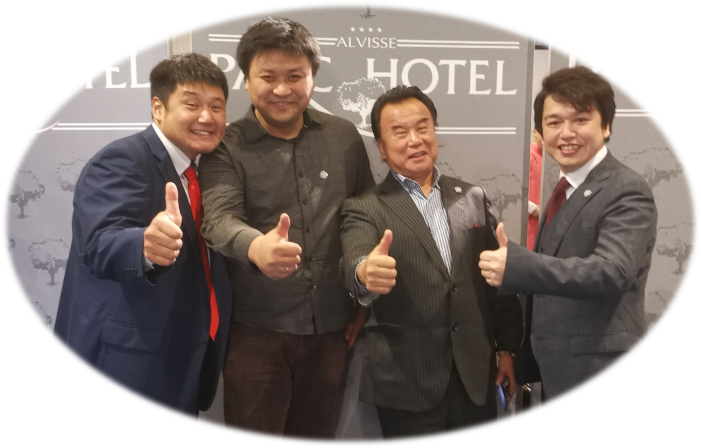

Artistic Work
| In Progress | ||
| ● International Association of Story-Telling and Story-Singing Art Asbl (IASA) | Director | Luxembourg |
| ● China Quyi Artists Association (中國曲藝家協會) | Member | PR China |
|
● Association of German Chinese Story-Telling and Story-Singing Artists (DCDK, Verein der Deutsch-Chinesische darstellender Künstler, 德國曲協) |
Chairman | Germany |
| ● German Chinese Folk Music Club | Initiator; Conductor; Composer, Arranger & Adaptor |
Germany |
| Previous | ||
| ● The 3rd German Chinese Drama Festival for University Students | Judge; Stage Performance Lecturer |
Konfuzius-Institut Frankfurt am Main Frankfurt, Germany |
|
● Chinese Academic Choir Berlin (Chinesischer Akademikerchor Berlin, 柏林中國學友合唱團) |
Impromptu Accompaniment; Lyrics & Chorus Score Adaptation; Acting Rehearsal Conductor; Bass |
Berlin, Germany |
|
● Choir of the German-Japanese Society Berlin (Chor der Deutsch-Japanische Gesellschaft Berlin, ベルリン独日協会混声コ一ラス) |
Tenor | Berlin, Germany |
| ● Komische Oper Berlin | Guest Symphony Player of Sheng | Berlin, Germany |
|
● Sino-German Language Year 2013 Closing Ceremony and Gala (Deutsch-Chinesisches Sprachenjahr 2013) |
Chief director; Screenwriter; Performer |
Berlin, Germany |
|
● The 1st Spectacle international de narration et d'humour (International Narration and Humor Show 2019) |
Chief director | Luxembourg |
| ● Piano Impromptu Accompaniment Club | Initiator; Teaching accompaniment courses |
Berlin, Germany |
| Performances | ||
|
● Spring Festival Gala in German and European cities from 2009 (and online international and local cultural activities in 2020/2021) |
Special Guest Performer of Folk melodramas & cross talk; Invited Compere |
(Germany) Berlin, Frankfurt, Munich, Düsseldorf, Hamburg, Dresden, Cologne, Bonn, Hannover, Bremen, Göttingen, Karlsruhe, Freiburg, Stuttgart, Magdeburg, Braunschweig, Essen, Freiburg, Wolfsburg, Aachen, Paderborn, Kaiserslautern, Greifswald, Mainz, Darmstadt, Clausthal-Zellerfeld, Bochum, Baden Sulza, (Austria) Graz, Linz, Innsbruck, Bregenz, Velden am Wörthersee, Baden, (Belgium) Leuven, (Spain) Valencia, (Polen) Warsaw, among others. |
| ● Invitations from cultural exchange organizations in European countries | Solo concerts; Leading teams to participate |
Within Europe, scores of times |
Gallery
 |
 |
 |
  |
 |
 
|
 |
 |
 |
Clips
|
2017: Creative Folk Musical Drama 1 "Famicom Mania" Spring Festival Gala Munich, 2017 |
View in SD-Format (Downloadable): |
|
2017-20: Creative Folk Musical Drama 2 "Manga Mania" Clips of the Spring Festival Galas in Germany: ● Munich, 2018 ● Berlin and Brandenburg, 2020 ● Braunschweig, 2017 ● Dresden, 2018 ● Kaiserslautern, 2018 ● Karlsruhe, 2018 ● Stuttgart, 2018 |
View in SD-Format (Downloadable): |
|
2018-19: Creative Folk Musical Drama 3 "TV-Series Mania" Clips of the Spring Festival Galas in Germany: ● Munich, 2019 ● Berlin and Brandenburg, 2018 ● Dresden, 2019 ● Stuttgart, 2019 |
View in SD-Format (Downloadable): |
|
2019-20: Creative Folk Musical Drama 4 "Film Mania" Clips of the Spring Festival Galas in Germany: ● Munich, 2020 ● Berlin and Brandenburg, 2019 |
View in SD-Format (Downloadable): |
|
2021: Organized online choir activities during the epidemic Petal (Original: Hana wa Saku, 『花は咲く』) Composer: Kanno Yōko Arrangement: Mikio Gohma Chinese Lyrics / Mixing / Synthesis: Hui LIU |
View in SD-Format (Downloadable): |
|
2021: New Year's Concert Special Edition for the year of Ox Organizer: Konfuzius-Institut Frankfurt a.M. |
View in SD-Format (Downloadable): |
|
2020 Solo Concert "Autumn·Moon·Night" Organizer: Gärten der Welt, Berlin |
View in SD-Format (Downloadable): |
|
2018: The Sino-German Full Moon Concert Organizer: Toskana Therme Bad Sulza |
View in SD-Format (Downloadable): |
|
2018: Frankfurt Spring Festival Gala: Conducting the Folk Orchestra Orchestra Works: Dance of the Yao People |
View in SD-Format (Downloadable): |
Awards
| 2019 | 14th China International Chorus Festival | Silver Prize: Lyrics and chorus score adaptation "Petal" |
| 2019 | Spring Festival Gala Munich | Audience Choice (Vote): The Most Popular Show Award (creative folk musical drama and cross talk) |
| 2018 | Spring Festival Gala Göttingen | Audience Choice (Vote): Best Program Award 1st (creative folk musical drama) and 2nd (cross talk) |
| 2017 | Autumn Festival Gala Wuppertal | Best Performance Award (Stand-up comedy) |
| 2016 | Spring Festival Gala Göttingen | Audience Choice (Vote): Best Performance Award (creative folk musical drama) |
| 2015 | Spring Festival Gala Clausthal-Zellerfeld | Audience Choice (Vote): Best Performance Award (cross talk) |
| 2005 | Creative Performance Competition "Uni-President Cup" Shanghai | First Prize: Created and performed the cross talk work "Bath" |
| Teenage years | Stage plays and competitions in schools, regions, and cities | Several gold/silver awards, first/second/third prizes, and best performance awards |
Artistic Talks
Verein der CDHAW-Absolventen und Mitglieder der Tongji-Universität Düsseldorf, Germany 2018 |
 |
● Artistic Talk: Academics and Art |
Konfuzius-Institut Frankfurt am Main Düsseldorf, Germany 2019 |
 |
● Lecture and Workshop: From Script to Stage: Training for Amateur Performers |
Musical Work Examples
Lyrics, Composition, Arrangement, and Translation Works | ||
| Forthcoming | ||
Instrumental and Vocal Works | ||
|
● Hulusi solo "Moonlight on the Lotus Pond" Composer: ZHANG Chao MP3 Download |
||
|
● Piano playing and singing" Jasmine" MP3 Download |
View in SD-Format (Downloadable): |
|
|
● Hulusi solo "A Plum (Yi JIan Mei)" Composer: CHEN Xinyi MP3 Download |
View in SD-Format (Downloadable): |
|
|
● Solo "The Grapes of Turpan Are Ripe" Lyricist: QU Cong, Composer: SHI Guangnan MP3 Download |
||
Enka Cover Versions (演歌·歌謡曲カバー選) | ||
|
● Itakogasa by Hashi Yukio Lyricist: Takao Saeki, Composer: Tadashi Yoshida MP3 Download |
『潮来笠』- 橋幸夫 作詞：佐伯孝夫 作曲：吉田正 |
|
|
● Natsu No Owari by Naotarō Moriyama Lyricists: Naotarō Moriyama & Kite Okachimachi Composer: Naotarō Moriyama MP3 Download |
『夏の終わり』- 森山直太朗 作詞：森山直太朗·御徒町凧 作曲：森山直太朗 |
|
|
● Yozakura Oshichi by Fuyumi Sakamoto Lyricist: Amari Hayashi, Composer: Takashi Miki MP3 Download |
『夜桜お七』- 坂本冬美 作詞：林あまり 作曲：三木たかし |
|
|
● Leave Yourself to the Passage of Time by Teresa Teng (Version of Tokunaga Hideaki) Lyricist: Toyohisa Araki, Composer: Takashi Miki MP3 Download |
『時の流れに身をまかせ』- テレサ·テン（鄧麗君） 作詞：荒木とよひさ 作曲：三木たかし |
|